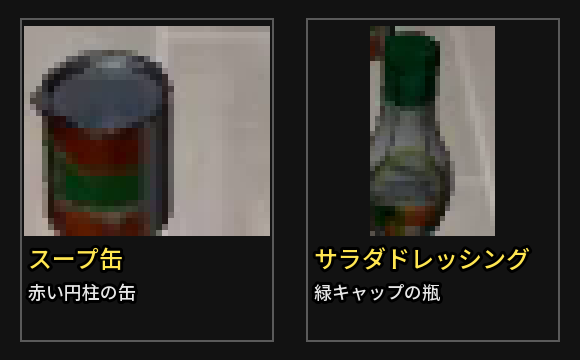
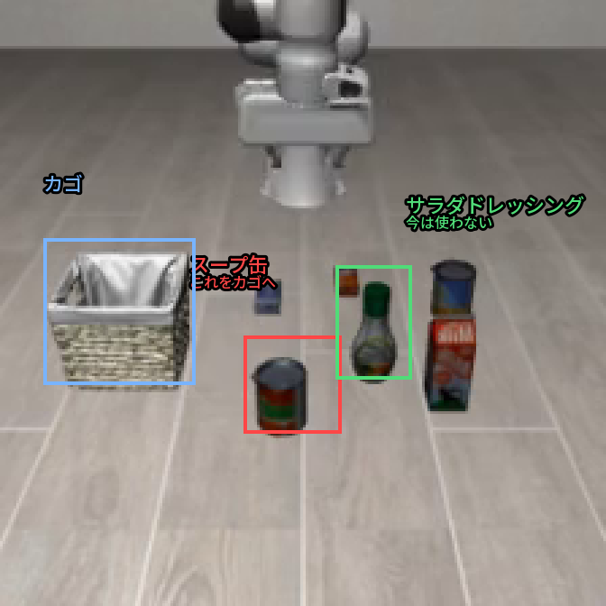
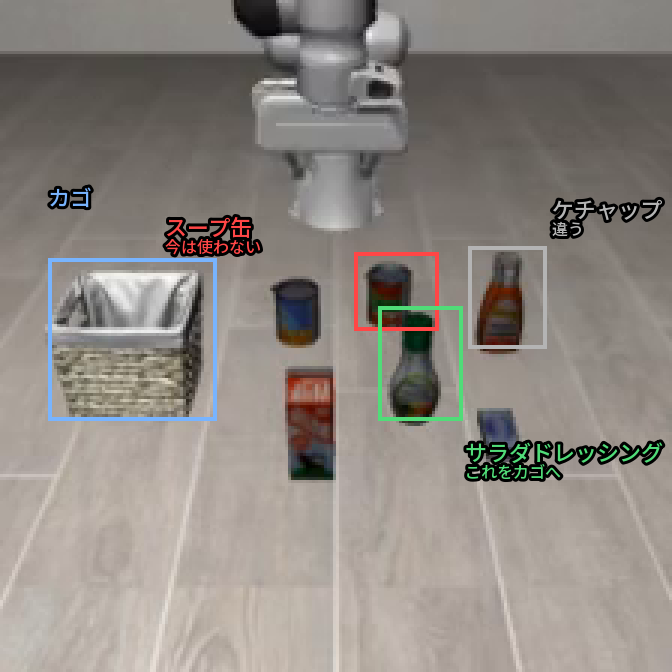

UR5e + 手先 Franka の表
正規化のページとは別。A は Franka、B は UR5e に Franka の手（Panda）を付けたもの。机の上には缶や瓶が複数ある。取るのはいつも1個だけ。50 配置・seed 7・300 ステップ。2026-11-12。
どれを取るか
0 は赤いスープ缶（alphabet soup）。2 は緑キャップのサラダドレッシング瓶。茶色い瓶はケチャップで、どちらでもない。成功は、指定した1個を左のカゴに入れること。

評価映像から切り抜いた。左がスープ缶、右がサラダドレッシング。

タスク 0
やるべきこと：赤いスープ缶をつかんで、左のカゴに入れる。
サラダドレッシングは置いたまま。

タスク 2
やるべきこと：緑キャップのサラダドレッシング瓶をつかんで、左のカゴに入れる。
スープ缶もケチャップも置いたまま。
結果
大きい数字はこのページの成功。括弧の「公式」は LIBERO の判定。ちがいの説明は表の下。
|
A0 スープ缶 / Franka |
A2 ドレッシング / Franka |
B0 スープ缶 / UR5e+Franka手 |
B2 ドレッシング / UR5e+Franka手 |
| Oracle |
A0 → A0
34/50 |
A2 → A2
47/50 |
B0 → B0
46/50
公式 41 |
B2 → B2
50/50 |
| Cross-body |
B0 → A0
33/50 |
B2 → A2
48/50 |
A0 → B0
13/50
公式 12 |
A2 → B2
9/50
公式 6 |
| Cross-task |
A2 → A0
0/50 |
A0 → A2
0/50 |
B2 → B0
0/50 |
B0 → B2
0/50 |
| Arithmetic |
A2 + B0 − B2 → A0
3/50 |
A0 + B2 − B0 → A2
41/50 |
B2 + A0 − A2 → B0
1/50
公式 0 |
B0 + A2 − A0 → B2
1/50
公式 0 |
成功の数え方
Franka は公式だけ。UR5e は公式より少しゆるい数え方も出す。
| 公式 | このページの数字（UR5e） |
|---|
| 何を見るか |
LIBERO の check_success()。BDDL が「指定した物がカゴの領域に入った」と認めたとき |
公式 または 幾何の in_basket |
| in_basket |
使わない |
物の XY がカゴ中心から 10 cm 以内、開始から 5 cm 以上動いた、カゴ底より 1 cm 以上高い |
| ゆるさ |
厳しい。縁に乗っている・まだつかんでいる、などだと缶がカゴに見えても失敗 |
見た目カゴに入っていれば拾う |
表で数字が二つあるマスは、こちらの数え方の方が多い。Franka（A0, A2 と、B の重みを Franka に載せたマス）は公式と同じなので括弧なし。
| マス | このページ | 公式 |
|---|
| B0 → B0 | 46 | 41 |
| A0 → B0 | 13 | 12 |
| A2 → B2 | 9 | 6 |
| B2 + A0 − A2 → B0 | 1 | 0 |
| B0 + A2 − A0 → B2 | 1 | 0 |
Arithmetic の中身は LoRA の足し引き。ベース重み W に対して W' = W + 2 (BpAp + BqAq − BrAr)。2 は α/r = 32/16。行き先のロボットで評価する。
| 式 | 使う LoRA | 評価先 | 成功 |
|---|
A2 + B0 − B2 | Frankaドレッシング + URスープ缶 − URドレッシング | A0 Franka でスープ缶をカゴへ | 3/50 |
A0 + B2 − B0 | Frankaスープ缶 + URドレッシング − URスープ缶 | A2 Franka でドレッシングをカゴへ | 41/50 |
B2 + A0 − A2 | URドレッシング + Frankaスープ缶 − Frankaドレッシング | B0 UR5e でスープ缶をカゴへ | 1/50（公式 0） |
B0 + A2 − A0 | URスープ缶 + Frankaドレッシング − Frankaスープ缶 | B2 UR5e でドレッシングをカゴへ | 1/50（公式 0） |
条件
| 項目 | 内容 |
|---|
| A | Franka。腕も手先も Franka |
| B | UR5e に Franka の手（Panda グリッパ）。Robotiq は使わない |
| タスク 0 | 赤いスープ缶をつかんで左のカゴへ。言語は pick up the alphabet soup and place it in the basket |
| タスク 2 | 緑キャップのサラダドレッシング瓶をつかんで左のカゴへ。言語は pick up the salad dressing and place it in the basket |
| 本数 | 50 配置、seed 7、最大 300 ステップ |
| 学習 | π0.5 + LoRA 10k。physnorm（位置・姿勢・閉じ具合を共通の物理レンジへ） |
| グリッパの数字 | 学習も推論も Franka の閉じ具合の式 |
| B の学習開始 | その配置の Franka 手先へ合わせてからデモ |
| UR5e で評価するとき | 全部 Panda 手先。開始もその配置の Franka 手先 |
| Franka で評価するとき | 腕も手先も Franka。B の重みを載せるときも開始はその配置の Franka 手先 |
| ノイズ | ガウシアンなし |
A の Oracle と Cross-task（34, 47, 0, 0）は Franka 素のまま。B 側と Arithmetic は付け替え後の重み。
動画
成功があるマスは成功と失敗を 1 本ずつ。成功がないマスは失敗だけ。B2 Oracle は 50/50 なので成功だけ。
Oracle A0 → A0 34/50
A0 → A0 init 0 成功
やるべきこと：赤いスープ缶を左のカゴへ。
ロボット：Franka。
実際：缶をつかんでカゴに入った。
A0 → A0 init 2 失敗
やるべきこと：赤いスープ缶を左のカゴへ。
ロボット：Franka。
実際：カゴに入らない。
Oracle A2 → A2 47/50
A2 → A2 init 0 成功
やるべきこと：緑のサラダドレッシング瓶を左のカゴへ。
ロボット：Franka。
実際：瓶をつかんでカゴに入った。
A2 → A2 init 4 失敗
やるべきこと：緑のサラダドレッシング瓶を左のカゴへ。
ロボット：Franka。
実際：カゴに入らない。
Oracle B0 → B0 46/50（公式 41）
B0 → B0 init 0 成功
やるべきこと：赤いスープ缶を左のカゴへ。
ロボット：UR5e。手先は Franka。
実際：缶をつかんでカゴに入った。
B0 → B0 init 20 失敗
やるべきこと：赤いスープ缶を左のカゴへ。
ロボット：UR5e。手先は Franka。
実際：カゴに入らない。
Oracle B2 → B2 50/50
B2 → B2 init 0 成功
やるべきこと：緑のサラダドレッシング瓶を左のカゴへ。
ロボット：UR5e。手先は Franka。
実際：瓶をつかんでカゴに入った。50本とも成功。
Cross-body B0 → A0 33/50
B0 → A0 init 7 成功
やるべきこと：赤いスープ缶を左のカゴへ。
ロボット：Franka。重みは UR5e スープ。
実際：缶をつかんでカゴに入った。
B0 → A0 init 41 失敗
やるべきこと：赤いスープ缶を左のカゴへ。
ロボット：Franka。重みは UR5e スープ。
実際：カゴに入らない。
Cross-body B2 → A2 48/50
B2 → A2 init 9 成功
やるべきこと：緑のサラダドレッシング瓶を左のカゴへ。
ロボット：Franka。重みは UR5e ドレッシング。
実際：瓶をつかんでカゴに入った。
B2 → A2 init 10 失敗
やるべきこと：緑のサラダドレッシング瓶を左のカゴへ。
ロボット：Franka。重みは UR5e ドレッシング。
実際：カゴに入らない。
Cross-body A0 → B0 13/50（公式 12）
A0 → B0 init 0 成功
やるべきこと：赤いスープ缶を左のカゴへ。
ロボット：UR5e。手先は Franka。重みは Franka スープ。
実際：缶をつかんでカゴに入った。
A0 → B0 init 3 失敗
やるべきこと：赤いスープ缶を左のカゴへ。
ロボット：UR5e。手先は Franka。重みは Franka スープ。
実際：カゴに入らない。
Cross-body A2 → B2 9/50（公式 6）
A2 → B2 init 4 成功
やるべきこと：緑のサラダドレッシング瓶を左のカゴへ。
ロボット：UR5e。手先は Franka。重みは Franka ドレッシング。
実際：瓶をつかんでカゴに入った。
A2 → B2 init 0 失敗
やるべきこと：緑のサラダドレッシング瓶を左のカゴへ。
ロボット：UR5e。手先は Franka。重みは Franka ドレッシング。
実際：カゴに入らない。
Cross-task A2 → A0 0/50
A2 → A0 init 0 失敗
やるべきこと：赤いスープ缶を左のカゴへ。
ロボット：Franka。重みはサラダドレッシング用。
実際：スープ缶はカゴに入らない。
Cross-task A0 → A2 0/50
A0 → A2 init 0 失敗
やるべきこと：緑のサラダドレッシング瓶を左のカゴへ。
ロボット：Franka。重みはスープ缶用。
実際：ドレッシングはカゴに入らない。
Cross-task B2 → B0 0/50
B2 → B0 init 0 失敗
やるべきこと：赤いスープ缶を左のカゴへ。
ロボット：UR5e。手先は Franka。重みはドレッシング用。
実際：スープ缶はカゴに入らない。
Cross-task B0 → B2 0/50
B0 → B2 init 0 失敗
やるべきこと：緑のサラダドレッシング瓶を左のカゴへ。
ロボット：UR5e。手先は Franka。重みはスープ缶用。
実際：ドレッシングはカゴに入らない。
Arithmetic A2 + B0 − B2 → A0 3/50
A2+B0−B2 → A0 init 8 成功
やるべきこと：赤いスープ缶を左のカゴへ。
ロボット：Franka。重みは A2+B0−B2。
実際：缶をつかんでカゴに入った。
A2+B0−B2 → A0 init 0 失敗
やるべきこと：赤いスープ缶を左のカゴへ。
ロボット：Franka。重みは A2+B0−B2。
実際：カゴに入らない。
Arithmetic A0 + B2 − B0 → A2 41/50
A0+B2−B0 → A2 init 0 成功
やるべきこと：緑のサラダドレッシング瓶を左のカゴへ。
ロボット：Franka。重みは A0+B2−B0。
実際：瓶をつかんでカゴに入った。
A0+B2−B0 → A2 init 2 失敗
やるべきこと：緑のサラダドレッシング瓶を左のカゴへ。
ロボット：Franka。重みは A0+B2−B0。
実際：カゴに入らない。
Arithmetic B2 + A0 − A2 → B0 1/50（公式 0）
B2+A0−A2 → B0 init 39 成功
やるべきこと：赤いスープ缶を左のカゴへ。
ロボット：UR5e。手先は Franka。重みは B2+A0−A2。
実際：カゴに入る（公式 predicate は失敗）。
B2+A0−A2 → B0 init 0 失敗
やるべきこと：赤いスープ缶を左のカゴへ。
ロボット：UR5e。手先は Franka。重みは B2+A0−A2。
実際：カゴに入らない。
Arithmetic B0 + A2 − A0 → B2 1/50（公式 0）
B0+A2−A0 → B2 init 13 成功
やるべきこと：緑のサラダドレッシング瓶を左のカゴへ。
ロボット：UR5e。手先は Franka。重みは B0+A2−A0。
実際：カゴに入る（公式 predicate は失敗）。
B0+A2−A0 → B2 init 0 失敗
やるべきこと：緑のサラダドレッシング瓶を左のカゴへ。
ロボット：UR5e。手先は Franka。重みは B0+A2−A0。
実際：カゴに入らない。